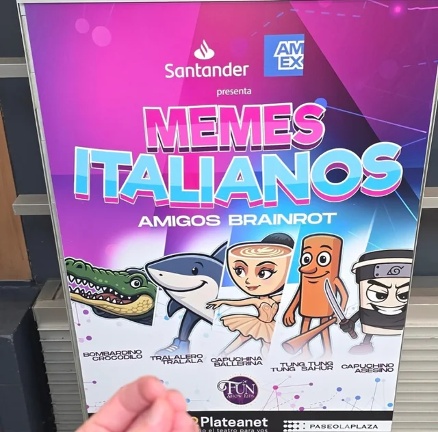

Tocanna: a artista que as big techs gostam
Eu talvez seja criticado por tomar essa posição, MAS: não vamos normalizar lixo gerado por IA. Não vamos normalizar lixo gerado por IA. NÃO VAMOS NORMALIZAR LIXO GERADO POR IA.
Tocanna, memes e "artistas" de IA
Eu vou me incomodar...
Mas alguém precisava dizer isso.
O que é Tocanna?
Até o final do vídeo...
- "Mas é só um meme!"
- "O autor ainda escreve as letras"
- "É a mesma coisa que fazer versões ou paródias!"
- "Não tem nenhum dinheiro envolvido"
Por que isso é ruim?
-
Sem muita enrolação: isso é plágio semi automatizado
- Não credita os artistas originais (existem maneiras de fazer)
- Está monetizado nas plataformas, competindo com artistas reais
- Se a IA funciona como uma 'lavagem' de plágio, onde não fica óbvio imediatamente o roubo. Aqui é diretamente reconhecível
- JAY-Z tá certo e todos outros artistas deveriam ir atrás da Tocanna e das plataformas que geraram essas músicas
-
"Mas isso não é apenas uma paródia ou meme"? É sim e eu entendo o apelo e a vontade de passar pano para isso.
- A lei de direitos autorais é uma merda que não ajuda os artistas de verdade
- Porém fazer versões, paródias e referências é uma linha tênue do contrato social de ser um artista. E hoje a Tocanna está largando uma bela cagada do outro lado da linha
- Sem falar nas gerações de imagem com fotos de famosos que se acontecesse comigo e eu tivesse dinheiro eu ia atrás.
-
A Tocanna e paǵinas de memes estão fazendo é muito pior. Algo que produtoras, gravadoras e Spotify querem fazer há muito tempo: NORMALIZAR O CONSUMO DE SLOP GERADO POR IA
https://ca.news.yahoo.com/next-natalie-portman-meet-tilly-103943494.html
-
Esse é o sonho de todas as gravadoras e o resultado lógico final de IAs generativas + capitalismo
- Artistas infinitamente reprodutíveis
- Sem personalidade humana (não vão denunciar o genocídio em Gaza, podem vender qualquer produto sem nenhum problema ético, etc...)
- Todo o dinheiro fica com as gravadoras/plataformas
-
Eu não posso provar isso, mas parece haver uma espécie de preferência das redes sociais e plataformas por conteúdo gerado por IA. O motivo para isso existe, mas como disse, sem provas.
... mas eu tenho algumas soluções
Solução 1
- Eu realmente to pouco me fudendo pra direitos autorais ou plágio... num mundo onde todas pessoas tem um mínimo de dignidade e acesso a condições básicas de vida
- Então, não monetize esta merda. Crie memes organicamente com uma comunidade.
- Outra opção é todo mundo monetizar ela e todas suas outras "geniais criações de design" usando ferramentas de IA para recriar infinitamente seu personagem.
- Compartilhem nos comentários prompts de como reproduzir a Tocanna

Solução 2
- Pessoas que não passam pano para roubo, plágio, precarização do trabalho dos artistas podem ir em todas as plataformas onde está hospedado conteúdo da Tocanna e reportar por violação de direitos autorais
- De quebra exigir de todas as páginas de memes que parem de repostar conteúdo spam de IA. Não podemos normalizar isso.